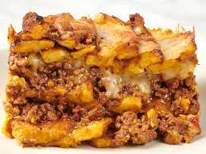

Pastelon de platano

Descripcion
The pastelon de platano is a dominican dish very among everyone in the country, it is done in most family gather or holyday party.
With this recipe you'll have an excellent plate to impress anyone.
Ingredients
- 6 platanos maduros
- Carne molida
- Queso
Steps
- Hervir y majar los platanos con la carne.
- Poner todo en un paire y llevar al horno por 45 minutos.
- Sacar el paire del horno y disfrutar.